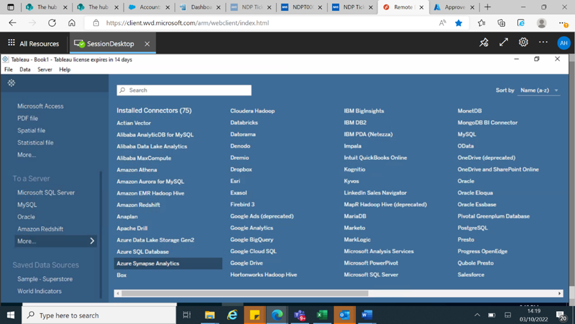
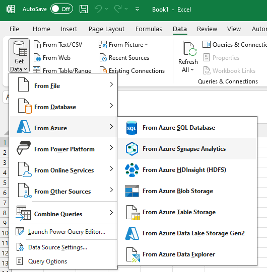
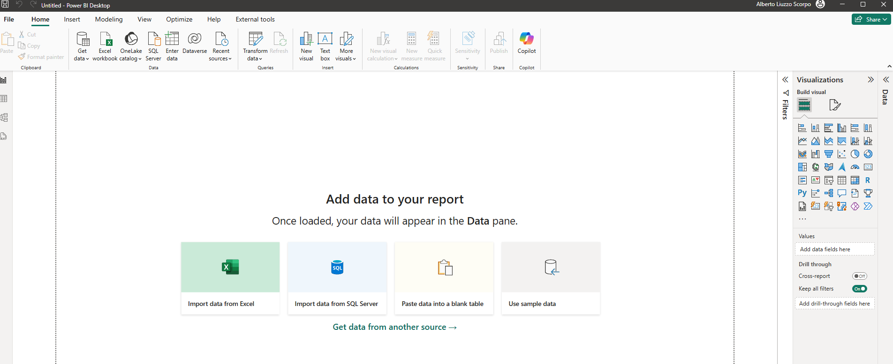
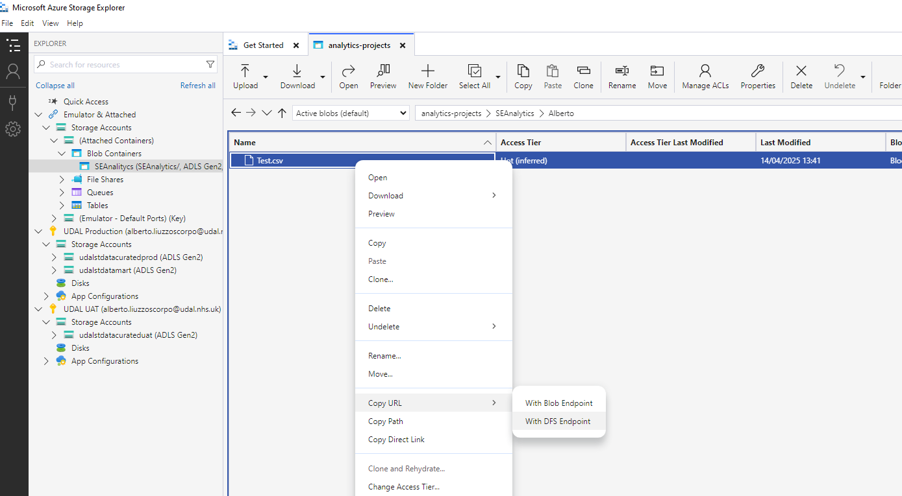
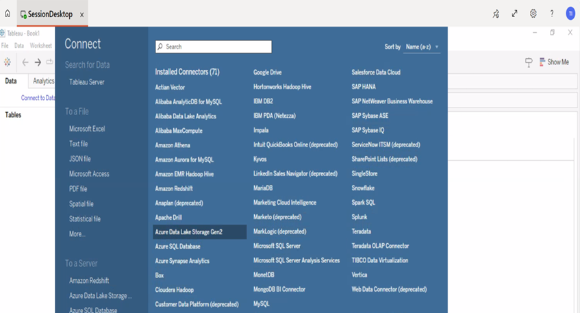
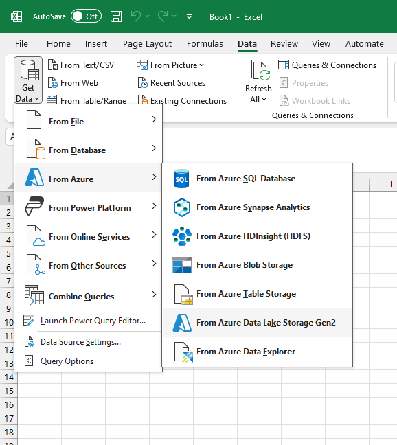
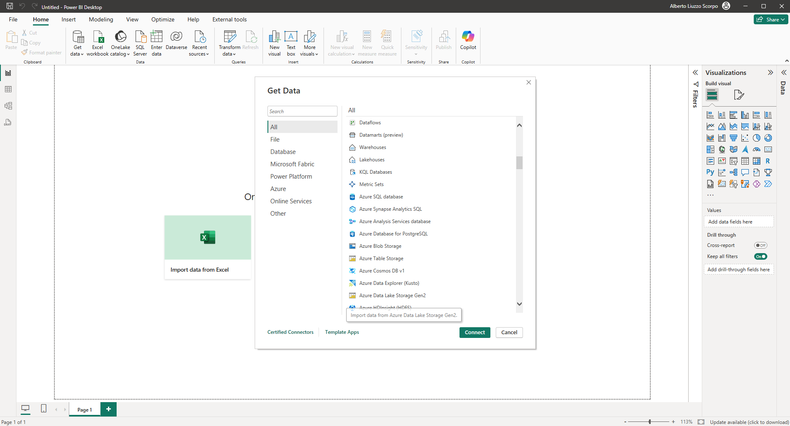

How to connect to the UDAL Warehouse
To connect to the UDAL data warehouse, you need to select Azure Synapse Analytics as datasource.
When prompted, fill the Server and Database fields using teh folowing: > Server: udalsyndataprod.sql.azuresynapse.net > Database: UDAL_Warehouse
Use your UDAL username and password to finalise the connection.
Tableau Click on More and choose Azure Synapse Analytics 
Excel In the Data tab, “Get Data” > “From Azure” > “From Azure Synapse Analytics” 
Power BI Click on “Get data from other source —>” and then select Azure Synapse Analytics SQL from the list 
DataBricks Follow the instructions here Link. The example below for the APCS_Core_Daily SUS table.
`` lakeName = “udalstdatacuratedprod.dfs.core.windows.net” # lake name
containerName = “restricted” # high level folder
fileLoc = “/patientlevel/MESH/APC/APCS_Core_Daily/” # folder where dataset is housed in azure
path = “abfss://”+containerName+“@”+lakeName+fileLoc
df = spark.read.option(“header”, “true”)
.option(“recursiveFileLookup”, “True”)
.parquet(path) ```R Use the script below
# Establish UDAL connections ---------------------------------------------- # insert your UDAL user ID library(svDialogs) uid <- dlgInput("Enter udal ID", Sys.info()["user"])$res # establish connection to UDAL con_udal <- DBI::dbConnect(drv = odbc::odbc(), driver = "ODBC Driver 17 for SQL Server", server = "udalsyndataprod.sql.azuresynapse.net", database = "UDAL_Warehouse", UID = uid, authentication = "ActiveDirectoryInteractive") # import data ---------------------------------------------------------- # in this example we use a query to define the data to pull string_sql <- readr::read_file("data/udal queries/sql_query_udal.txt") df_data <- DBI::dbGetQuery(conn = con_udal, statement = string_sql) # Close connection -------------------------------------------------------- DBI::dbDisconnect(con_udal)
NOTE: R will open a window in the background to enter the UDAL credentials, without any notification!!!
How to connect to the SE D&A LakeMart
How to read an existing file from the LakeMart
To connect to the SE D&A LakeMart, you need to select Azure Data Lake Storage Gen2 as datasource.
When prompted, enter the endpoint URL (ex. https://udalstdataanalysisprod.dfs.core.windows.net/) to browse through the files available to you, or if you have a direct File URL (ex. https://udalstdataanalysisprod.dfs.core.windows.net/analytics-projects/SEAnalytics/Alberto/Test.csv)
NOTE: to obtain the file URL, browse to the file in the Microsoft Azure Storage Explorer, right-click on the file, click on “Copy URL” and then “With DFS Endpoint” 
NOTE: Using the endpoint URL does not work for me, however I have no issues using the direct file URL
Use your UDAL username and password to finalise the connection.
Tableau Click on More and choose Azure Data Lake Storage Gen2 
Excel In the Data tab, “Get Data” > “From Azure” > “From Azure Data Lake Storage Gen2” 
Power BI Click on “Get data from other source —>” and then select Azure Data Lake Storage Gen2 from the list 
DataBricks Use the example script below.
my_df = spark.read.csv( "abfss://analytics-projects@udalstdataanalysisprod.dfs.core.windows.net/SEAnalytics/Alberto/Test.csv" # this is the _direct file URL_ , header="true") display(my_df) # to visualise the table stored in my_df dataframe
R Use the script below
# Establish UDAL connections ---------------------------------------------- # insert your UDAL user ID library(svDialogs) uid <- dlgInput("Enter udal ID", Sys.info()["user"])$res # establish connection to UDAL con_udal <- DBI::dbConnect(drv = odbc::odbc(), driver = "ODBC Driver 17 for SQL Server", server = "udalsyndataprod.sql.azuresynapse.net", database = "UDAL_Warehouse", UID = uid, authentication = "ActiveDirectoryInteractive") # import data ---------------------------------------------------------- # in this example we use a query to define the data to pull string_sql <- readr::read_file("data/udal queries/sql_query_udal.txt") df_data <- DBI::dbGetQuery(conn = con_udal, statement = string_sql) # Close connection -------------------------------------------------------- DBI::dbDisconnect(con_udal)
How to write in the LakeMart
DataBricks Follow the instructions given by Charlotte in the DataBricks L&D session (example below for the https://udalstdatacuratedprod.dfs.core.windows.net/restricted/patientlevel/MESH/APC/APCS_Core_Daily/ table)
lakeName = "udalstdatacuratedprod.dfs.core.windows.net" # lake name containerName = "restricted" # high level folder fileLoc = "/patientlevel/MESH/APC/APCS_Core_Daily/" # folder where dataset is housed in azure path = "abfss://"+containerName+"@"+lakeName+fileLoc df = spark.read.option("header", "true") \ .option("recursiveFileLookup", "True") \ .parquet(path)